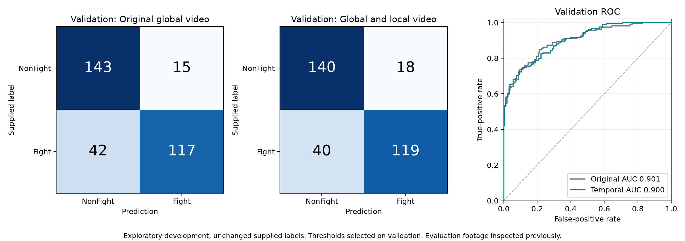

# RWF global and local temporal video study One frozen R3D-18 candidate: original whole-clip mean plus four local 16-frame windows, pooled by mean and maximum. Same source split and development-only selection. | Partition | Clips | Accuracy | Macro-F1 | Fight recall | AUC | |---|---:|---:|---:|---:|---:| | train | 1271 | 89.06% | 0.891 | 0.854 | 0.965 | | validation | 317 | 81.70% | 0.816 | 0.748 | 0.900 | C=0.001; threshold=0.53. Predeclared development promotion rule passed: False. The candidate was retained as a negative development finding. Released evaluation arrays were not loaded and no evaluation features were extracted. Exploratory supervised RWF development on the same source-grouped split. The released evaluation clips have already been inspected in previous experiments. This is not an untouched test or an independent confirmation of generalization. No supplied labels changed. Independent human label review, near-duplicate and pretraining overlap audits remain pending. Whole-clip scores are not calibrated probabilities or person-level attribution. [Protocol](protocol.json) | [Development decision](promotion.json) | [Verification](audit.json) # Paired temporal video comparison | Partition | Previous accuracy | Temporal accuracy | Old errors fixed | New errors introduced | |---|---:|---:|---:|---:| | validation | 82.02% | 81.70% | 12 | 13 | This comparison uses identical clips and source groups with unchanged labels. Each head has its own validation-selected threshold. The temporal candidate and evaluation eligibility were frozen before evaluation features were read. These are exploratory development results, not an independent generalization claim. [Changed predictions](changed_predictions.csv) | [Per-source changes](paired_comparison.json) | [Development decision](promotion.json) 
Frozen protocol | Verification | Paired comparison | Raw-video demonstrations
